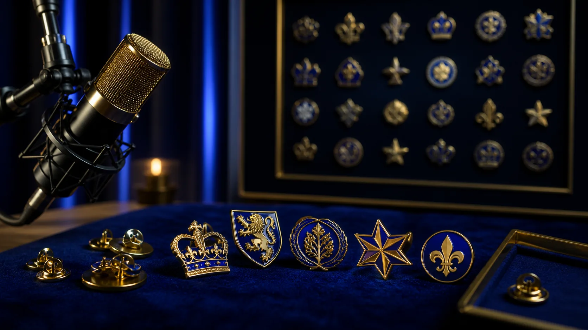
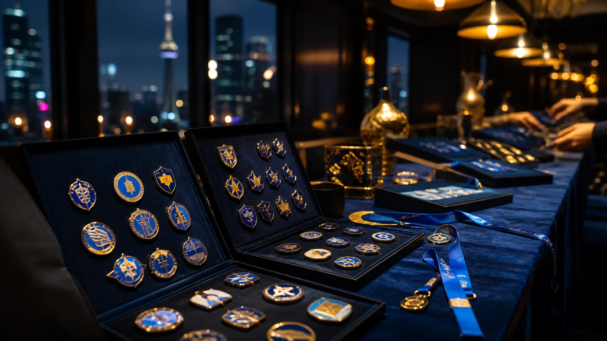
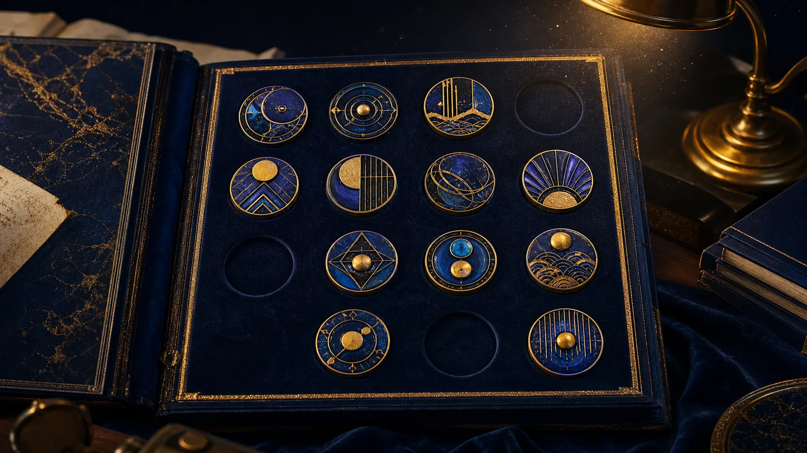
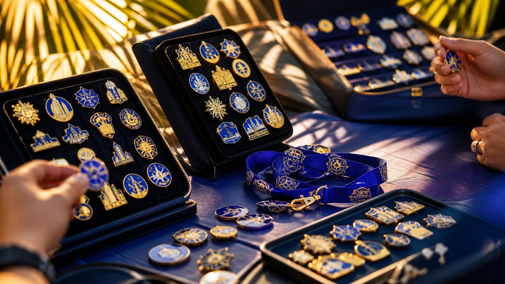

Online · demo
PinPics live pin show
Demo community livestream · 7:00 PM ET
Add a record
Nothing is uploaded or submitted in this concept demo.
Notifications
Collector profile
Collector calendar
Explore eight illustrative online and in-person listings. PinPics’ live Events area supports calendar views, event creation, and subscriptions; these local cards do not represent scheduled production events.

Demo community livestream · 7:00 PM ET

Illustrative venue · 6:30 PM ET

Demo community stage · 8:00 PM ET

Illustrative venue · 11:00 AM ET
Demo help room · 2:00 PM ET
Illustrative Chicago venue · 1:00 PM CT
Demo Trade Assist room · 7:30 PM ET
Illustrative San Diego venue · 11:00 AM PT